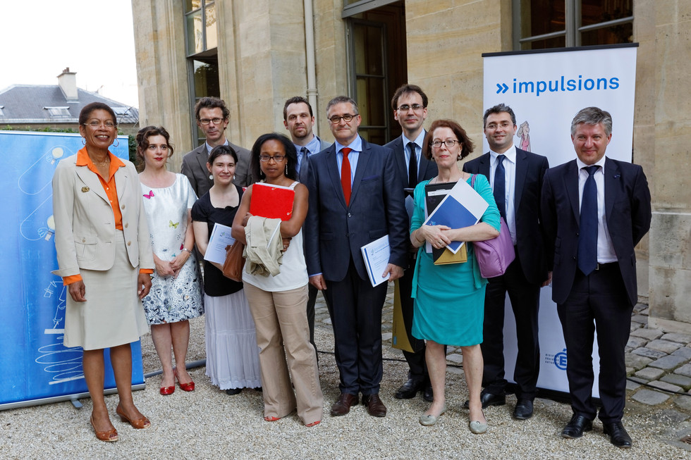

Tout commence par la volonté de répondre au décrochage scolaire en partant d’un pari “ Et si la commande publique devenait un outil de lutte contre le décrochage scolaire ?”
En effet, nul doute qu’une immersion professionnelle réussie est un puissant levier de remobilisation scolaire et professionnelle.
Dès lors, comment permettre la rencontre entre les entreprises, les jeunes et la Mission de Lutte contre le Décrochage Scolaire (MLDS) ?
À partir de 2013, une réponse originale a été initiée par le ministère de l’Education nationale et de la Jeunesse : la mission des achats a créé une passerelle entre ces différents acteurs, en l’intégrant à sa politique d’achats par le biais d’une clause sociale intégrée dans les marchés publics : la clause sociale de formation (CSF) sous statut scolaire est née !
Grâce à ce dispositif juridique, les acheteurs, en s’appuyant sur la commande publique, permettent la réalisation de parcours sécurisés et qualitatifs au bénéfice des jeunes en situation de décrochage.
S’ensuit une enquête exploratoire, associant la Direction générale de l’enseignement scolaire (DGESCO) et les académies de Créteil et de Versailles . Cette exploration a permis à l’équipe projet de constater la manière dont les jeunes appréhendent leur formation scolaire et professionnelle avant et après leur passage en période de CSF, en devenant acteurs de leurs parcours.
En effet, la plupart de ces jeunes sont retournés en formation initiale, certains ont poursuivi leur parcours vers l’insertion (alternance, apprentissage, etc.).
Dans la majeure partie des cas, les entreprises se sont montrées extrêmement sensibles à ce dispositif, porteur d’une démarche partenariale et citoyenne. Les parcours sont co-construits par la MLDS et l’entreprise.
L’équipe projet composée de Jean-Xavier Lichtlé (Mission des achats), Marc Lasnier (Bureau de la Formation), Julien Grand (Direction du numérique pour l’éducation), Marie Camara (coordinatrice MLDS, Créteil) et Jean-Michel Secondé (CIO de Montmorency) a reçu en juillet 2013 le Prix Impulsion de l’action administrative innovante, et a été reconnu dès 2014 par la Direction des achats de l’Etat au titre de l’Innovation sociale.
Entre 2014 et 2018, le dispositif a pris de d’ampleur : de plus en plus d’acheteurs intègrent dans leurs marchés des CSF, de plus en plus de MLDS se saisissent de cet outil pédagogique, de plus en plus d’entreprises accueillent des jeunes.
Une équipe projet s’est mise en place en mai 2019, au sein du Laboratoire d’innovation (LAB – 110 bis) du ministère de l’Education nationale et de la Jeunesse.
Depuis 2019, le dispositif s’organise au niveau national : c’est-à-dire à grande échelle, tout en maintenant son potentiel qualitatif pour les jeunes. Les porteurs de projets, Jean-Xavier Lichtlé et Ekram Ben Hamza Bondue, intrapreneurs au Lab 110 bis, ont pu tester, avec les parties prenantes plusieurs approches, allant de la prévention du décrochage jusqu’à l’insertion des jeunes.
Ainsi entreprises, acheteurs et MLDS pilotes - Créteil, Normandie, Nouvelle Aquitaine, La Martinique- ont permis à plus d’une centaine de jeunes de bénéficier de ce dispositif.
En 2020, les actions de l’équipe projet portée par le Lab 110 bis et leur coach, Léa Douhard, ont été nombreuses et toujours fructueuses, pour faire connaître le dispositif à une échelle nationale, identifier les points de blocage et apporter des solutions en vue de répondre aux espoirs soulevés par ce dispositif : accompagner les jeunes vers une solution innovante répondant à leurs projets.
L’équipe CSF met donc tout en œuvre pour apporter des informations ciblées, en vue d’accompagner au mieux tous ces acteurs, et de fluidifier au maximum le process de mise en place des parcours :
- réalisation d’un site d’information
- réalisation d’un outil de suivi numérique permettant à chaque acteur d’obtenir, par lui-même, les informations sur les offres de parcours et sur les parcours en cours de réalisation,
- mise en place d’un premier pilotage du dispositif et d’équipes élargies côté éducation nationale dans toutes les régions académiques, sous forme de réseau autoporteur.
- expérimentation avec d’autres acteurs de l’éducation nationale, les GPDS, dans le cadre de la prévention du décrochage scolaire et les CIO
- expérimentation avec des acteurs de l’éducation- comme le GROUPE SOS- monsieur Badr Houabrim (directeur adjoint de la Fabrique des mouvements) et monsieur Dieng (chef de service et tuteur pédagogique) et des acteurs de l’insertion pour pouvoir étendre le champs d’action des CSF.
L’équipe projet remercie l’investissement des acteurs de terrain et plus particulièrement Patrick Beaudet, MLDS Normandie- et Samir Fatmi - tuteur pédagogique Créteil - pour leur participation au déploiement et au rayonnement de ce dispositif dont l’originalité réside dans la place et le rôle qu’il confère à tous les acteurs (jeune, MLDS, entreprise, acheteur).
